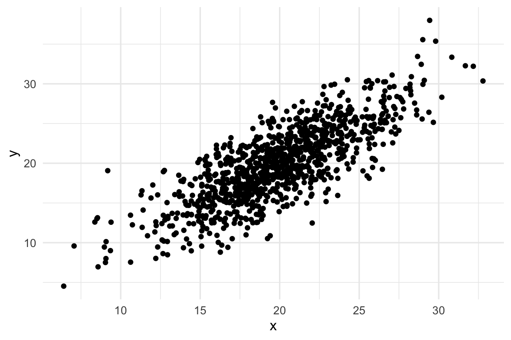
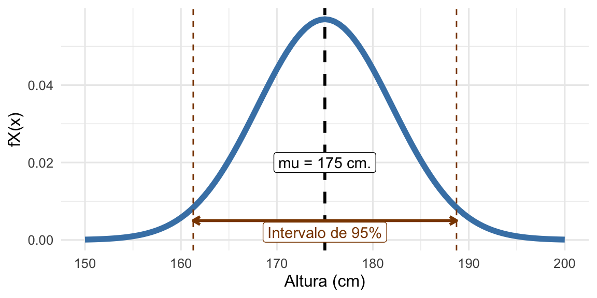
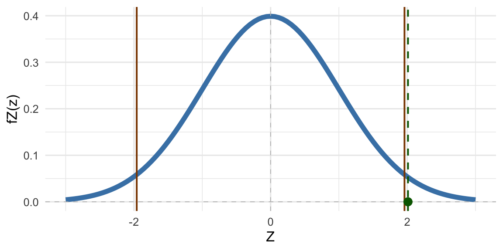
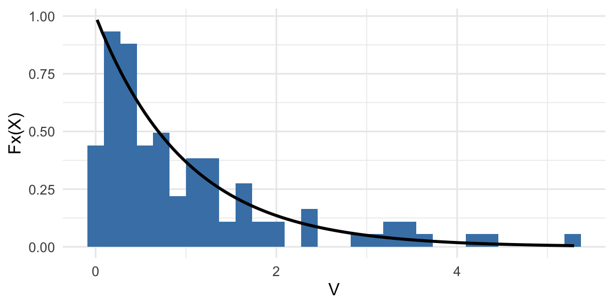
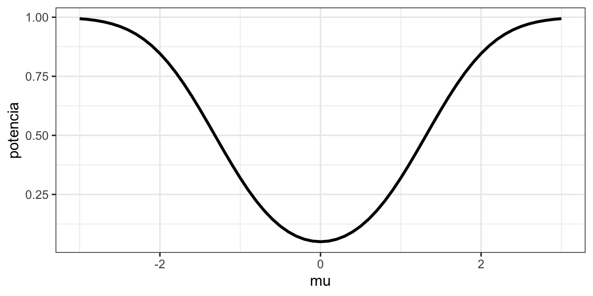
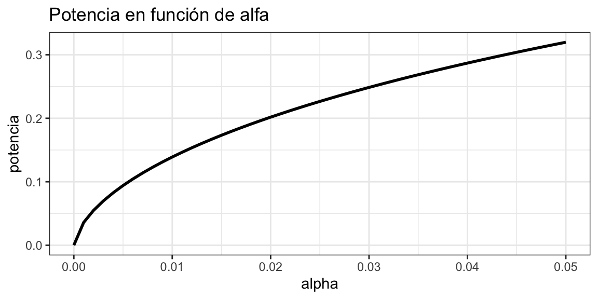
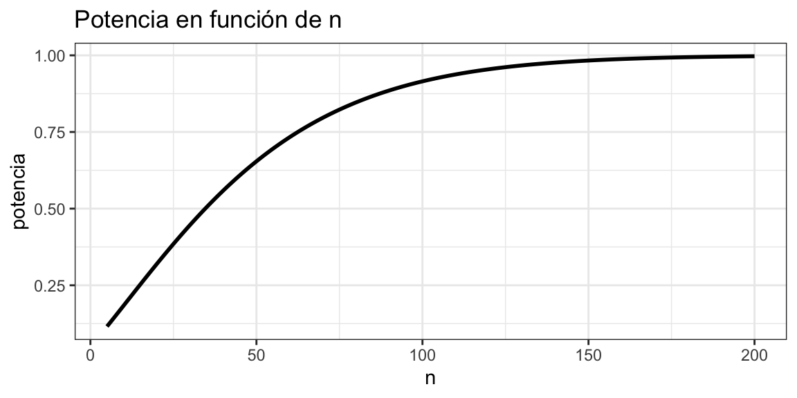

2 Repaso de probabilidad y estadística
2.1 Variables aleatorias
Wasserman(Wasserman 2004) nos dice que una variable aleatoria es un mapeo entre el espacio de eventos y los números reales (\(X:\Omega \rightarrow \mathbb{R}\)). Momento cerebrito ¿Esto que quiere decir? En términos prácticos, lo que implica es definición es que una variable aleatoria nos da un número para cada evento del posible espacio de eventos.
Vamos con un ejemplo. Supongan que tiramos una moneda justa dos veces y tenemos la variabla aleatoria \(X\) que cuenta la cantidad de caras (H)1. Los posibles eventos \(\omega\) del espacio de eventos \(\Omega\) son \(\Omega = \{ TT, TH, HT, HH \}\). En este caso, la variable aleatoria \(X\) va a tomar los valores \(X = \{ 0, 1, 1, 2\}\) para cada \(\omega\). Esto, en resumidas cuentas, es lo que hace una variable aleatoria.
1 Del inglés Head y ceca sera T del inglés Tail.
El ejemplo anterior se trata de una variable aleatoria discreta, es decir, que sólo puede tomar algunos valores posibles, pero también existen variables aleatorias continuas como por ejemplo la altura de una nueva persona que nace.
2.2 Probabilidad
Para una variable como la definida en el ejemplo anterior podemos definir fácilmente su probabilidad de ocurrencia. Debido que la moneda es justa, todos los eventos de \(\Omega\) son equiprobables, y es por eso que podemos definir:
| \(\omega\) | \(X(\omega)\) | \(P({\omega})\) |
|---|---|---|
| TT | 0 | 1/4 |
| TH | 1 | 1/4 |
| HT | 1 | 1/4 |
| HH | 2 | 1/4 |
Sin embargo, el concepto de probabilidad es algo complejo, pero, como esto no es un curso de probabilidad, vamos a confiar en que ustedes ya lo traen claro. Si tienen coraje puede ir a leer el capítulo 1 de (Wasserman 2004) y si quiere algo más terrenal pueden ir a ver el repaso de probabilidad de (Cunningham 2021) (disponible online).
Cuando las variables aleatorias son continuas la cosa se complica un poco más ya que \(P(X=c)\), es decir, la probabilida de que una variable tome un valor dado, es cero. Esto lo vamos a repensar un poco en la siguiente sección, cuando definamos lo que nos importa para este libro: Las funciónes de densidad y de distribución.
2.3 Probabilidad condicional
La probabilidad condicional es la probabilidad de que ocurra un evento A dado que ocurrió un evento B y se escribe como \(P(A|B)\). Por ahora quedémonos con esta definición simple que será de vital importancia para lo que sigue.
2.4 Probabilidad total
Ahora imaginemos que pasa si queremos calcular la probabilidad de B (\(P(B)\)). Bueno, para esto tendríamos que considerar la probabilidad de que ocurra B dado que ocurrió S y junto con la probabilidad de B dado que NO ocurrió S. A su vez, cada una de estas probabilidades deberíamos pesarlas por la probabilidad de que ocurra o no A. Esto sería2:
2 Recordemos que \(\neg\) es el símbolo lógico de la negación.
\[ P(B) = P(B|A) \times P(A) + P(B|\neg A) \times P(\neg A) \tag{2.1}\]
Pensemosun ejemplo. Imaginemos que una perona tiene que completar un trabajo de jardinería (evento B) en un día. La probabilidad de que termine este trabajo si llueve (evento A) es \(0.35\) y la probabilidad de que lo termine si no llueve es de \(0.95\). Si la probabilidad de que llueva es \(P(A)=0.4\) ¿Cuál es la probabilidad (\(P(B)\)) de que el trabajo se complete en un día? Echemos mano a la fórmula de probabilidad total:
\[ \begin{array} _P(B) &=& P(B|A) \times P(A) + P(B|\neg A) \times P(\neg A) \\ &=& 0.35 \times 0.4 + 0.95 \times 0.6 \\ &=& 0.71 \end{array} \tag{2.2}\]
Entonces, la probabilidad de completar el trabajo en un día es \(P(B)=0.71\).
Por último, cuando tenemos muchas condiciones, podemos definir de forma general a la probabilidad total como:
\[ P(B) = \sum_n P(B|A_n) P(A_n) \tag{2.3}\]
2.5 Teorema de Bayes
Ahora que ya llegamos a la fórmula de Bayes a partir de las definiciones de probabilidad total podemos tomar prestado un ejemplo de (Herzog, Francis, y Clarke 2019): Tenemos un test para identificar si somos portadores de un virus (llamémoslo IKV). Este test tiene una sensibilidad de 99.99% y una especificidad de 99.99%. Es decir, la probabilidad de que el test de positivo, dado que tenemos el virus (\(P(T^+|IKV)\)) es de 0.9999, y lo mismo ocurre para la probabilidad de que el test de negativo en caso de que NO tengamos el virus (\(P(T^-|\neg IKV)\)). Sabemos también que la incidencia del virus IKV es de 1 en 10000.
Supongamos que somos elegidos aleatoriamente para realizarnos el test y este da positivo ¿Qué probabilidad de ser portadores del virus tenemos (\(P(IKV|T^+)\))? La primera respuesta que se nos viene es 0.9999 ¿Verdad? Pero, si estuvimos prestando atención, ya a esta altura debemos saber que para invertir la condicionalidad de una probabilidad tenemos que acudir al bueno de Bayes. O sea:
\[ P(IKV|T^+) = \frac{P(T^+|IKV) \times P(IKV)}{P(T+)} \tag{2.4}\]
donde \(P(T^+|IKV) = 0.9999\) y \(P(IKV) = 1/10000 = 0.0001\). Además, echando mano a la definición de probabilidad total podemos calcular \(P(T+)\) como:
\[ P(T+) = P(T^+|IKV) \times P(IKV) + P(T^+|\neg IKV) \times P(\neg IKV) \tag{2.5}\]
donde \(P(T^+|\neg IKV) = 1-0.9999\) y \(P(\neg IKV) = 1-0.0001\). Reemplazando todos los valores tenemos que:
\[ \begin{array} _P(IKV|T^+) &=& \frac{P(T^+|IKV) \times P(IKV)}{P(T+)}\\ &=& \frac{P(T^+|IKV) \times P(IKV)}{P(T^+|IKV) \times P(IKV) + P(T^+|\neg IKV) \times P(\neg IKV)} \\ &=& \frac{0.9999 \times 0.0001}{0.9999 \times 0.0001 + (1-0.9999) \times (1-0.0001)} \\ &=& \frac{0.9999 \times 0.0001}{0.9999 \times 0.0001 + 0.0001 \times 0.9999} \\ &=& 0.5 \end{array} \tag{2.6}\]
¿Qué? ¿Esto significa que si el test me da positivo solo tengo un 0.5 de probabilidad de tener el virus? ¿Esto quiere decir que los tests no sirven para nada? Momento, analicemos un poco al resultado al que llegamos. Lo que nos dice esta cuenta es que, una vez que el test nos da positivo, a pesar de lo sensible del test y por lo “raro” de la portación del virus, nuestra probabilidad de ser portadores es de 0.5. Pero, ¿Y nuestra probabilidad de ser portadores si el test nos da negativos? Hagamos la cuenta:
\[ \begin{array} _P(IKV|T^-) &=& \frac{P(T^-|IKV) \times P(IKV)}{P(T-)}\\ &=& \frac{P(T^-|IKV) \times P(IKV)}{P(T^-|IKV) \times P(IKV) + P(T^-|\neg IKV) \times P(\neg IKV)} \\ &=& \frac{(1-0.9999) \times 0.0001}{(1 - 0.9999) \times 0.0001 + (0.9999) \times (1-0.0001)} \\ &=& 1E-8 \end{array} \tag{2.7}\]
OK, ahora la cosa tiene más sentido. O sea, el test es bastante bueno para decirnos cuando no somos portadores y dando negativo, el problema es cuando da positivo. En este caso tenemos que preocuparnos, pero, como vimos anteriormente, la probabilidad de ser portadores es de apenas 0.5.
Hay una solución más simple para esto y es la que deben estar pensando ustedes: ¿Y si me hacen un segundo test? ¡BINGO! Calculemos rápidamente la probabilidad de estar infectados si nos testean por segunda vez:
\[ P(IKV|T^{2+}) = \frac{0.9999^2 \times 0.0001}{0.9999^2 \times 0.0001 + 0.0001^2 \times 0.9999} = 0.9999 \tag{2.8}\] Ahora sí, si somos testeados por segunda vez, la probabilidad de ser portadores dado que tenemos dos resultados positivos trepa a 0.9999. Nos podemos quedar tranquilos.
Para cerrar, me gustaría que pensemos un poco en una palabra MUY importante que se dijo en el enunciado del problema: Aleatoriamente. En muchos de los casos en los que nos testeamos para ver si somos portadores de un virus, lo hacemos porque tenemos algún tipo de presunción de que podemos serlo (por ejemplo, tenemos síntomas). ¿Cuál creen que sería la probabilidad que se modifica en la fórmula? Exacto, \(P(IKV)\), ya que sería más bien \(P(IKV|síntomas)\).
2.6 Esperanza
La esperanza de una variable aleatoria \(X\), a veces también llamada media poblacional, es simplemente la suma pesada de todos sus valores posibles. No debemos confundir la esperanza con el promedio muestral, aunque, como veremos en breve, para algunos casos el primero es un estimador insesgado del segundo.
La esperanza de una variable aleatoria discreta se define como:
\[ E(X) = \sum_{1}^\infty x_i p(x_i) \tag{2.9}\] En este caso es muy claro la naturaleza de promedio pesado, ya que a cada valor posible de \(X\) lo estamos pesando por su probabilidad. Sin embargo, para una variable aleatoria continua, en la que no tenemos definida una probabilidad puntual \(p(x_i)\) sino una función de densidad \(f(x)\), la definición es la siguiente:
\[ E(X) = \int_{-\infty}^\infty x f(x) dx \tag{2.10}\]
Como resulta esperable, la suma se transforma en una integral y la probabilidad puntual se reemplaza por \(f(x)\).
Algunas propiedades importantes de la esperanza son:
\[ \begin{array} _E(aX+b) & = & aE(X) + b\\ E(\sum_{i=1}^n X_i) & = & \sum_{i=1}^nE(X_i) \end{array} \tag{2.11}\]
Por último y a modo de aviso, advertencia y amenaza, recordemos que \(E(X)^2 \neq E(X^2)\).
2.7 Varianza y covarianza
La varianza nos da una idea de la variabilidad de los procesos aleatorios que generan una variable aleatorio3. La varianza de la variable aleatoria \(X\) se define como:
3 Dato que será de vital importancia para sentar las bases de la inferencia estadística.
\[ V(X) = \sigma^2 = E \left[ (X - E(X))^2 \right] \tag{2.12}\]
Y se puede demostrar que:
\[ V(X) = E(X^2) - E^2(X) \tag{2.13}\]
Por otro lado, la covarianza es mide la cantidad de dependencia lineal entre dos variables aleatorias. La msma se define como
\[ Cov(X,Y) = E(XY) - E(X)E(Y) \tag{2.14}\]
Si \(Cov(X,Y)>0\), esto indica que las dos variables se mueven en la misma dirección, mientras que si \(Cov(X,Y)<0\) esto indica que ambas variables se mueven en direcciones opuestas.
2.8 Correlación
La correlación es la versión más amigable de la covarianza. ¿Por qué? Porque nos dice cuánto covarían dos variables independizándose de la varianza de cada una de ellas, es decir, normalizando. Esto la convierte en una medida muy relevante e informativa. Si tenemos dos variables aleatorias \(X\) e \(Y\), la correlación de se define como la covarianza es sus versiones estandarizadas:
\[ \begin{array} _W &=& \frac{X-E(X)}{\sqrt{V(X)}} \\ Z &=& \frac{Y-E(Y)}{\sqrt{V(Y)}} \end{array} \tag{2.15}\]
De la siguiente forma:
\[ \begin{array} _Corr(X,Y) &=& Cov(W,Z) \\ &=& Cov(\frac{X-E(X)}{\sqrt{V(X)}}, \frac{Y-E(Y)}{\sqrt{V(Y)}}) \\ &=& \frac{1}{\sqrt{V(X)}} \frac{1}{\sqrt{V(Y)}} Cov(X-E(X),Y-E(Y)) \\ &=& \frac{Cov(X,Y)}{\sqrt{V(X) V(Y)}} \end{array} \tag{2.16}\]
Usamos la propiedad de la covarianza que dice que:
\[ Cov(X+a, Y+b) = Cov(X,Y) + Cov(X,b) + Cov(a,Y) + Cov(a,b) \tag{2.17}\]
Y como \(a\) y \(b\) son constantes (en nuestro caso esperanzas), el único término que sobrevive es \(Cov(X,Y)\). Esta magnitud es también conocida como el coeficiente de correlación \(\rho\).
Con esta definición en la mano, si yo les digo que dos variables \(X\) e \(Y\) tienen una covarianza de \(14.988\) no les dice mucho, ¿No? Ahora, si les digo que el coeficiente de correlación es de \(0.788\) probablemente entiendan rápidamente que ambas variables están muy relacionadas4.
4 Si quieren divertirse y de paso convertise en ases de la determinación del coeficiente de correlación a ojímetro les recomiendo este juegazo. Una estudiante ostenta el abultado récord de \(231\) puntos ¿La pasaste?
Veamos este ejemplo con números y de paso repasemos como se calcula la correlación en R:
Ver el código
set.seed(1234)
x = rnorm(1000, 20, 4)
y = x*.9 + rnorm(1000, 2, 3)
cat(paste("La covarianza entre X e Y es", round(cov(x,y), 3)))
#> La covarianza entre X e Y es 14.988
cat(paste("La correlación entre X e Y es", round(cor(x,y), 3)))
#> La correlación entre X e Y es 0.788
Es muy importante tener en cuenta que el cueficiente de correlación nos dice cuán linealmente relacionadas están las variables. Veamos esto con un ejemplito:
Ver el código
set.seed(1234)
x = runif(1000, -1, 1)
y = x^2 + .1*runif(1000, -1, 1)
cat(paste("La covarianza entre X e Y es", round(cov(x,y), 3)))
#> La covarianza entre X e Y es 0.01
cat(paste("La correlación entre X e Y es", round(cor(x,y), 3)))
#> La correlación entre X e Y es 0.055En este caso vemos que claramente hay uan relación entre X e Y (no son una nube de puntos sin estructura) pero como esta relación no es lineal (cuadrática en nuestro caso), el coeficiente de correlación es cercano a cero.
Finalmente, tengamos en cuenta que el coeficiente de correlación puede tomar valores entre \(-1\) y \(1\). Una correlación positiva indica que las variables varían de la misma manera (si aumenta una aumenta la otra) y lo contrario ocurre con una correlación negativa (si aumenta una disminuye la otra. Cuanto más cerca esté el coeficiente de \(1\) o, más fuerte es la relación lineal.
2.9 Población y muestra
Acá usar una versión de la figurita de All of statistics que pone la generación de los datos en el dominio de la probabilidad y la estimación de estos parámetros en el dominio de la estadística. Me parece una forma ideal de empezar a hablar de qué queremos hacer con la estadística.
Vamos con un ejemplo que nos puede ayudar a entender de qué hablamos cuando hablamos de estimación. Supongamos que conocemos distribución de la altura de la población de varones en Argentina. No estamos hablando de calcular el promedio de la altura de los varones sino de que conocemos la función de densidad de la cual la altura de cada varón es una muestra. Si no queda del todo claro respiren hondo y esperen un poco que ya se va a ir aclarando. Entonces, la altura de los varones de Argentina tiene una distribución normal con media en cm. de \(\mu_{varones} = 175\) y una desviación estándar \(\sigma_{varones} = 7\), o, como ya aprendimos a decir: \(H_{varones} \sim \mathcal{N}(\mu_{varones},\sigma^2_{varones}) = \mathcal{N}(175, 49)\)5. A continuación podemos ver la función de densidad:
5 h del inglés height.

Ahora bien, en la figura podemos ver la función \(f_X(x)\) junto con una línea vertical que nos indica la media y dos líneas que nos indican los percentiles \(2.5\) y \(97.5\), es decir, que contienen el 95% de la masa de probabilidad. Todo esto es muy lindo pero estamos jugando a ser dios (o el Doctor Manhattan, o en lo que ustedes crean). Es imposible conocer los parámetros de esta distribución pero lo que sí podemos hacer en la práctica es estimarlos. Estimar los parámetros de un modelo es el pan y manteca de la inferencia estadística y el data mining. Como podemos ver en esta hermosa figura de Wasserman(Wasserman 2004), la teoría de probabilidad nos ayuda a definir modelos para la generación de datos y la inferencia estadística nos ayuda a estimar estos parámetros.
Hay diversas formas de encontrar estimadores para los parámetros de un modelo (por ejemplo, método de los momentos, máxima verosimilitud, etc.) pero entenemos que eso excede los contenidos de este curso. Sin embargo, para estimar todos conocemos los estimadores de los parámetros poblacionales \(\mu\) y \(\sigma^2\). Claro, el promedio \(\bar{x}\) y el desvío muestral \(\hat{S}^2\):
\[ \begin{array} \\\bar{x} & = & n^{-1} \sum_{i=1}^n x_i\\ \hat{S}^2 & = & (n-1)^{-1} \sum_{i=1}^n (x_i \end{array} \tag{2.18}\]
Simulemos tres experimento tomando 10, 50 y 100 mediciones (\(n\)) y veamos los histogramas de estas muestras y sus estimaciones de \(\mu\) y \(\sigma\):
Como es de esperarse, podemos ver que al aumentar \(n\), la estimación de los parámetros poblacionales es mejor. Pero tenemos que tener esta idea en mente, cada vez que tomamos una muestra podemos estimar un parámetro de la población y hasta hacer inferencias estadísticas sobre el mismo, pero NUNCA lo vamos a conocer.
Algo importante cuando usemos un estimador es que este sea consistente, lo que implica que si aumentamos \(n\) al infinito, el estimador converge al valor del parámetro (en este caso el promedio muestral para \(n \to \infty\) tiende a la media poblacional \(\mu\)). Decimos entonces que un estimador converge en probabilidad a un determinado parámetro. Como usuarios de la estadística esto nos va a venir masticado y no nos vamos a tener que preocupar tanto pero es bueno tenerlo en mente cuando hablamos de estimadores y estimaciones.
2.10 Inferencia estadística
Vamos a hacer un breve paseo por los conceptos clave de la inferencia estadística de la mano de un ejemplo.
Supongamos que tenemos una página web de noticias y queremos probar una nueva feature con la que queremos aumentar el tiempo de retención de los usuarios. Para esto le vamos a presentar a los usuarios la versión nueva de la página y vamos a medir el tiempo que se mantienen en la página en ms6.
6 Probabilemente lo más correcto para responder esta pregunta sea un A/B test, pero ya hablaremos de eso más adelante.
Primero definamos nuestra variable aleatoria: \(X\):“La diferencia de tiempo en ms entre después y antes del cambio”. Nuestro objetivo entonces es poder afirmar con cierto grado de seguridad si \(E(X)\) es igual a cero o distinto (nos importa tanto si aumenta como si disminuye). Empecemos con lo más sencillo, supongamos que \(X \sim \mathcal{N}(\mu, \sigma^2)\). Esta suposición no es tan loca ya que mucho procesos naturales se distribuyen de forma normal7. Supongamos también por un momento (más adelante vamos a relajar esta condición) que, ya sea por un experimento previo o porque somos magos, conocemos la \(\sigma^2\) de \(X\).
7 Además, como vamos a ver más adelante, cuando el \(n\) es lo suficientemente grande, esta condición deja de importar tanto.
Como dijimos en el recuedro, si bien nuestro objetivo es probar si \(\mu\) es diferente de \(0\), esto lo vamos a hacer a partir de un experimento. Una vez que hagamos el experimento y midamos vamos a tener al clásico estimador de \(\mu\): \(\hat{\mu}=\bar{X}\), es decir, el promedio muestral. Ahora supongamos que el promedio nos da \(0.5\): ¿Es distinto de cero? Para responder esa pregunta es que vamos a utilizar las herramientas de la inferencia estadística.
Definamos primero las hipótesis:
\[ \begin{array} _H_0 &:& \mu = 0 \\ H_1 &:& \mu \neq 0 \end{array} \tag{2.19}\]
Lo que vamos a querer hacer es rechazar \(H_0\) con cierto grado de confianza. Para esto vamos a comparar nuestra medición \(\bar{x}_{obs}\) con la distribución de los \(\bar{X}\) bajo \(H_0\).
Recordemos que si \(X \sim \mathcal{N}(\mu, \sigma^2)\) entonces \(\bar{X}_n \sim \mathcal{N}(\mu, \sigma^2/n)\)8, donde \(n\) es la cantidad de realizaciones con las que yo calculo mi \(\bar{X}\). Entonces si mi \(\bar{x}_{obs}\) medida está lo suficientemente lejos de \(0\) podemos decir que que \(\mu\) es diferente de cero. Pero: ¿Qué es suficientemente lejos?
8 La \(n\) en \(\bar{X}_n\) es simplemente para enfatizar que es el promedio de una seciencia de \(n\) realizaciones.
Bueno, para responder esa pregunta vamos a tener que primero definir los errores que podemos cometer. Podemos cometer el error de decir que \(\mu\) es diferente de cero cuando no lo es (Error tipo I o dalso positivo) o podemos cometer el error de decir que \(\mu\) no es diferente de cero cuando sí lo es (Error tipo II o dalso negativo). Nuestro razonamiento va a ser empezar acotando el error de tipo I.
Para esto vamos a calcular qué tal probable es observar un valor igual o más alejado del cero que \(\bar{x}_{obs}\) dado que \(H_0\) es verdadera. Es decir, \(P(|\bar{X}|>\bar{x}_{obs}|H_0)\). Esta magnitud es lo que se conoce como el viejo y querido p-valor o p-value (si te gusta hacerte el canchero). En nuestro caso lo podemos calcular explícitamente. Empecemos estandarizando \(\bar{X}\) de la siguiente forma:
\[ Z = \frac{\bar{X} - \mu}{\sqrt{\sigma^2/n}} \sim \mathcal{N}(0,1) \tag{2.20}\]
Qque bajo \(H_0\) es:
\[ Z_{H_0} = \frac{\bar{X}}{\sqrt{\sigma^2/n}} \sim \mathcal{N}(0,1) \tag{2.21}\]
Entonces, si consideramos a \(z_{\bar{x}}\) como la versión estandarizada de \(\bar{x}_{obs}\), podemos calcular el p-valor como:
\[ \begin{array} _p_{valor} &=& P(|Z| \geq |z_{\bar{x}}| \: \: |H_0) \\ &=& P(Z \geq |z_{\bar{x}}| \: \: |H_0) + P(Z \leq -|z_{\bar{x}}| \: \: |H_0) \\ &=& 2 P(Z \leq -|z_{\bar{x}}| \: \: |H_0) \end{array} \tag{2.22}\]
Y como bajo \(H_0\) ocurre que \(Z_{H_0} \sim \mathcal{N}(0,1)\):
\[ p_{valor} = 2 \phi(-|z_{\bar{x}}|) \tag{2.23}\]
Y ahora que tenemos esta probabilidad qué hacemos. Bueno, lo que podemos hacer es decir: Si los datos vienen de \(H_0\) podemos calcular que tan “raros” son, entonces pongamos una cota en esa probabilidad y de esa forma estaremos acotando el error de tipo I en el largo plazo9. Así es que surge el famoso \(\alpha\) que normalmente hacemos valer \(0.05\)10. ¿Qué significa eso? Bueno, significa que, si la hipótesis nula fuera verdaera diríamos euivocadamente que hay un efecto cuando no lo hay el \(5%\) de las veces. Este párrafo se podría extender al infinito, pero por ahora quedémonos con esta interpretación “práctica” del p-valor (si se quedan con las ganas pueden ir a leer esto).
9 El enfoque frecuentista de la estadística justamente se basa en controlar los errores dada una repetición infinita de mi experimento.
10 Para una discusión más profunda sobre el tema de la selección de \(\alpha\) en la psicología experimental les recomiendo este hermoso artículo de Maier y Lakens (Maier y Lakens 2022).
Entonces el camino es el siguiente: Tomamos las medidas, calculamos el promedio, calculamos el p-valor y si este es menor que \(\alpha\) podemos decir que \(H_0\) es falsa. Todo muy lindo, pero siempre tengamos en mente que no sabemos exactamente si para esa realización estamos comentiendo un error de tipo I o no, y ese es uno de las limitaciones de la estadística frecuentista.
Simulemos un experimento para \(n=50\) en el que nosotros conocemos tanto \(\sigma^2\) como \(\mu\):
Ver el código
set.seed(123)
n <- 50
mu <- .5
sigma <- 2
X <- rnorm(n, mu, sigma)
cat(paste("El promedio muestral es:", round(mean(X), 3)))
#> El promedio muestral es: 0.569
cat(paste("El promedio muestral estandarizado es:", round(mean(X)/sqrt(sigma^2/n), 3)))
#> El promedio muestral estandarizado es: 2.011Acá vemos que, efectivamente, \(H_0\) es falsa ya que \(\mu=0.5\) (el verdadero parámetro poblacional). La media observada vale 0.569 y la media estandarizada (\(z_{\bar{x}}\)) vale 2.011. Miremos ccomo queda \(z_{\bar{x}}\) dentro de la distribución de los \(Z_{H_0}\) (los \(\bar{X}\) bajo \(H_0\) estandarizados):
#> Warning: Using `size` aesthetic for lines was deprecated in ggplot2 3.4.0.
#> ℹ Please use `linewidth` instead.
La curva azul es la función de densidad de \(Z_{H_0}\), las líneas verticales naranjas delimitan los valores de \(Z\) cuales la probabilidad de encontrar valores más extremos es mayor a \(0.05\), es decir, a la derecha de la línea naranja positiva y a la izquierda de la negativa estamos en la región en la que vamos a considerar a \(z_{\bar{x}}\) como evidencia significativa de que \(H_0\) es falsa. La suma de las integrales de la curva azul a la derecha de la línea naranja posiva y a la izquierda de la negativa da como resultado \(\alpha\).
El punto verde (y la línea punteada que lo acompaña) es nuestra observación \(z_{\bar{x}}\). O sea, todo parece indicar que controlando nuestro error de tipo I con \(\alpha=0.05\) el valor observado nos permitiría que podemos rechazar \(H_0\) o, como se dice habitualmente: “Que \(\mu\) es significativamente diferente de cero”. Calculemos el p-valor y veamos si esto es efectivamente así.
\[ p_{valor} = 2 \phi(-|z_{\bar{x}}|) = 2 \phi(-2.011) \tag{2.24}\]
Que en R lo podemos calcular como:
Ver el código
cat(paste("El p-valor es:", round(2*pnorm(-mean(X)/sqrt(sigma^2/n)),3)))
#> El p-valor es: 0.044Que como es menor que \(0.05\) nos permite rechazar \(H_0\).
Para resolver este ejemplo hicimos dos consideraciones que les pueden hacer ruido: 1. Asumimos que conocíamos la desviación estándar de X. 2. Asumimos que X tiene distribución normal.
2.10.1 ¿Qué pasa si no conozco \(\sigma\)?
Con respecto a 1, es natural que les haga ruido ya que en la mayoría de los casos no conocemos al \(\sigma\) poblacional sino que lo vamos a estimar. Y ¿Cómo lo vamos a estimar? Echando mano del estimador insesgado de la desviación estándar \(S\). El mismo se define como:
\[ S^2 = \frac{\sum_{i=1}^n(x_i-\bar{x})^2}{n-1} \tag{2.25}\]
Para nuestro ejemplo vale:
Ver el código
cat(paste("la estimación de sigma es:", round(sd(X), 3)))
#> la estimación de sigma es: 1.852Bastante cercana al valor poblacional \(2\).
Ahora, no es cuestión de normalizar con este nuevo \(S^2\) y seguir como si nada. La cosa cambia y la distribución de \(\bar(X)\) estandarizado bajo \(H_0\) ya no tiene una distribución normal sino una distribución t de student con \(n-1\) grados de libertad. O sea:
\[ \frac{\bar{X} - \mu}{\sqrt{S^2/n}} \sim t_{n-1} \tag{2.26}\]
Esto se deduce a partir de que: \[ \frac{\bar{X} - \mu}{\sqrt{\sigma^2/n}} \sim \mathcal{N}(0,1) \] Y:
\[ (n-1)\frac{S^2}{\sigma^2} \sim \chi^2_{n-1} \tag{2.27}\]
Y la definición de \(t_{n-1}\) es11:
11 Dentro de la función pt ahora se agrega el parámetro df que representa los grados de libertad.
\[ \begin{array} _U &\sim& \mathcal{N}(0,1) \\ V &\sim& \chi^2_{n} \\ \frac{U}{\sqrt{V/n}} &\sim& t_{n} \end{array} \tag{2.28}\]
Calculemos el p-valor de nuestro ejemplo, pero ahora como si no conociéramos la \(\sigma\) poblacional12:
12 Dentro de la función pt ahora se agrega el parámetro df que representa los grados de libertad.
Ver el código
cat(paste("El p-valor es:", round(2*pt(-mean(X)/sqrt(sd(X)^2/n), df = n-1),4)))
#> El p-valor es: 0.0347Una buena noticia es que este p valor se puede calcular directamente con la función t.test(X) de la siguiente forma:
Ver el código
t.test(X)
#>
#> One Sample t-test
#>
#> data: X
#> t = 2.1721, df = 49, p-value = 0.03472
#> alternative hypothesis: true mean is not equal to 0
#> 95 percent confidence interval:
#> 0.04254842 1.09506577
#> sample estimates:
#> mean of x
#> 0.5688071Para cerrar, vale la pena mencionar que los parámetros \(\beta\) de un modelo lineal también tienen distribución t (los grados de libertad son más complejos). O sea que todo lo que vimos hasta acá de errores tipo I, tipo II, p-valor, etc. vale también para ellos.
2.10.2 ¿Qué pasa si \(X\) no se distribuye normalmente?
Ahora que ya vimos que estamos haciendo cuando hacemos inferencia sobre la media, nos damos cuenta que más que interesarnos la distribución de los datos \(X\) nos interesa la de sus medias \(\bar(X)\) (si estiman algún parámetro de interés, claro). Y acá viene al rescate el teorema central del límite:
\[ \frac{\bar{X}-\mu}{\sqrt{\sigma^2/n}} \xrightarrow{\mathcal{D}} \mathcal{N}(0,1) \tag{2.29}\]
El mismo nos dice que distribución de la media estandarizada converge endistribución a una \(\mathcal{N}(0,1)\) sin importar la distribución de \(X\). Esto significa que si el \(n\) es lo suficientemente grande podemos estar tranquilos de que no es una asunción tan loca13.
13 Cuando las cosas no se pueden aproximar así hay solución, existen otros tests o simplemente tests que no asumen ninguna distribución (no paramétricos).
Supongamos que hay una variable aleatoria \(V \sim \mathcal{E}(\lambda=1)\) tal que \(E(V) = \lambda\). Si tomamos una muestra de \(n=100\) de \(V\), el histograma de la misma se ve algo así:

Donde en azul vemos el histograma y en negro la función de densidad para \(\mathcal{E}(\lambda=1)\). Ahora, qué pasa si tomamos \(1000\) muestras y hacemos el histograma de sus medias:
Ver el código
n = 1000
Zs <- c()
set.seed(123)
for (i in 1:10000) {
x <- rexp(n, rate = 1)
Zs <- c(Zs, (mean(x) - 1)/sqrt(sd(x)^2/n))
}
Z_means <- tibble(Zs)
Z_means %>% ggplot() +
geom_histogram(aes(x = Zs, y = ..density..), fill = "steelblue") +
stat_function(fun = dnorm, args = list(mean = 0, sd = 1),
color = "black", linewidth = 1) +
labs(title = paste("n = ", n), x = "Medias de v", y = "Densidad") +
scale_x_continuous(limits = c(-4, 4))
#> Warning: Removed 2 rows containing non-finite outside the scale range
#> (`stat_bin()`).
#> Warning: Removed 2 rows containing missing values or values outside the scale range
#> (`geom_bar()`).Donde ahora la curva negra es una \(\mathcal{N}(0,1)\). Hagan la prueba con otras distribuciones u otros \(n\) y van a ver que rápido (o lento para las distribuciones altamente asimétricas) que convergen a una \(\mathcal{N}(0,1)\).
2.11 Potencia estadística
Ya hablamos de los errores de tipo I y prometimos hablar de los errores de tipo II. ¿Qué sería eso? Bueno, sería el caso en el que \(H_0\) fuera falsa y nosotros no la rechazáramos. A diferencia del contros de errores de tipo I, la probabilidad de cometer errores de tipo II (llamada muy originalmente \(\beta\)) depende del valor real de mi parámetro. En el ejemplo anterior, cuando \(H_0\) era verdadera \(\mu\) era igual a cero pero, ¿Qué pasa cuando es falsa? ¿Qué valor de \(\mu\) tenemos que asumir?.
Empecemos definiendo a la potencia estadística, la misma se define como \(1-\beta\), es decir, cuanto más acotado este el error de tipo II más alta será la potencia. Una definición formal podría ser:
\[ potencia = P(rechazar \, H_0 | H_0 \, falsa) \tag{2.30}\]
Que, para el ejemplo anterior la podríamos reescribir como:
\[ \begin{array} _potencia &=& P(rechazar \, H_0 | H_1) \\ &=& P\left( \left| \frac{\bar{X}}{\sqrt{\sigma^2/n}} \right| \geq Z_{1-\alpha/2} \right)\\ &=& 1 - P\left( Z \leq Z_{\alpha/2} + \frac{\mu}{\sqrt{\sigma^2/n}} \right) - P\left( Z \leq Z_{1-\alpha/2} + \frac{\mu}{\sqrt{\sigma^2/n}} \right) \\ \end{array} \]
Fijensé que para calcularla no sólo necesitamos a \(\sigma\) (que podríamos estimar) sino también a \(mu\), que es nuestro parámetro de interés. Por ejemplo, podemos ver que la pontencia depende de \(\mu\), siendo más grande para valores de \(\mu\) más alejados del cero. Esto tiene sentido ya que a medida que \(|\mu|\) es mayor, es menor probable cometer errores tipo II.
Ver el código
potencia <- function(sigma, mu, n, alpha) {
pnorm(qnorm(alpha/2)-mu/(sqrt(sigma^2/n))) + 1 -
pnorm(qnorm(1-alpha/2)-mu/(sqrt(sigma^2/n)))
}
pot <- potencia(3,seq(-3,3,.1),20,0.05)
pot_tbl <- tibble(mu = seq(-3,3,.1), potencia = pot)
pot_tbl %>% ggplot(aes(x = mu,
y = potencia)) +
geom_line(linewidth = 1) +
theme_bw()
Como es de esperarse, la potencia también depende del \(\alpha\):
Ver el código
pot <- potencia(3,1,20,seq(0, 0.05, 0.001))
pot_tbl <- tibble(alpha = seq(0, 0.05, 0.001), potencia = pot)
pot_tbl %>% ggplot(aes(x = alpha,
y = potencia)) +
geom_line(linewidth = 1) +
labs(title = "Potencia en función de alfa") +
theme_bw()
Con valores de potencia mayores para valores más garndes de \(\alpha\). Nuevamente esto tiene sentido ya que ser más restictivo con el rechazo de \(H_0\) (o sea, que tenga que observar un valor más extremo) lleva a una disminución de \(\alpha\), a un aumento de los errores tipo II y con ello a una disminución de la potencia.
Finalmente, la potencia también depende del \(n\):
Ver el código
pot <- potencia(3,1,seq(5, 200),0.05)
pot_tbl <- tibble(n = seq(5, 200), potencia = pot)
pot_tbl %>% ggplot(aes(x = n,
y = potencia)) +
geom_line(linewidth = 1) +
labs(title = "Potencia en función de n") +
theme_bw()
Con valores de potencia más altos para \(n\) más grande. Es decir, si tengo una muestra más grande voy a cometer menos errores14. Esta última dependencia es muy importante.
14 Las distribuciones de \(H_0\) y \(H_1\) se hacen más finas y hay menos solapamiento, recuerden que en ambas la varianza disminuye con \(1/n\).
Hay una interpretación que me gusta que es la siguiente, la potencia estadística es la lupa con la que miramos el problema. Es decir, si tenemos una potencia alta vamos a poder detectar cambios pequeños sin cometer demasiados errores. Supongamos que queremos diseñar un experimento con una dada potencia. El \(\alpha\) lo decidimos cuando acotamos el error de tipo I, a \(\mu\) no lo conocemos (algo vamos a hacer), entonces, lo que más a mano nos queda para tener un experimento más potente es aumentar el \(n\).
El uso que se le da normalmente a esta herramienta es para determinar el mínimo tamaño de muestra necesario para un experimento. El procedimiento es el siguiente:
- Estimamos la variabilidad de nuestro experimento de alguna forma. Lo más usual es hacer un piloto pero también puede ser un dato que salga de la bibliografía, o de experimentos anteriores que hayamos realizado.
- Determinamos el mínimo tamaño de efecto de interés (SESOI15). Esta no es una determinación estadística sino que de dominio, tenemos que conocer el problema y pensar en cuál sería el mínimo tamaña de efecto que consideraría relevante (relevante, no significativo). Esto a veces puede ser un poco confuso pero también nos obliga a pensar qué consideramos relevante en nuestro experimento.
- Una vez que tenemos estas dos magnitudes calculamos el tamaño de muestra para una potencia dada (por ejemplo \(0.9\)) y un \(\alpha\) dado (por ejemplo \(0.05\)).
15 Del inglés smallest effect size of interest.
No siempre resulta tan directo como en nuestro ejemplo, en el que podemos despejar explícitamente \(n\), pero la forma de pensar el problema es siempre similar.
Para más detalles sobre los procedimientos para justificar el temaño de muestra ver (Lakens 2022).